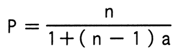

1台のCPUの性能を1とするとき，そのCPUをn台用いたマルチプロセッサの性能Pが，

で表されるとする。ここで，aはオーバーヘッドを表す定数である。例えば，a＝0.1，n＝4とすると，P≒3なので，4台のCPUから成るマルチプロセッサの性能は約3になる。この式で表されるマルチプロセッサの性能には上限があり，nを幾ら大きくしてもPはある値以上には大きくならない。a＝0.1の場合，Pの上限は幾らか。
ア 5
イ 10
ウ 15
エ 20